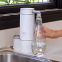

Los purificadores de PSA mejoran la calidad del agua
PRIMEROS ESTILOS CON CSS
Esta es mi página web y le daré estilos.
Te cuento que tienen por dentro
Carbón activado granular (CAG), CAG impregnado en plata y
KDF® (aleación de cobre y zinc de alta pureza) que reducen más del 90 % de cloro
y del 70 % de trihalometanos (THM) además de otros metales, como hierro y plomo.
Por otro lado, el uso de la zeolita natural incrementa el espectro de retención
de metales ya que también retiene aluminio.
Reduce el cloro y metales pesados
Para que disfrutes de Agua Purificada PSA lista para beber y cocinar
